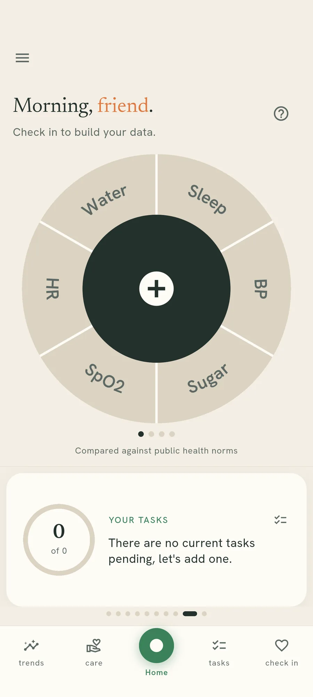

Recording
One number, two taps.
The circle on the home screen is for the numbers you record and move on from. Everything slower than that has a page of its own.

What the circle is for
Sleep, blood pressure, blood sugar, oxygen, heart rate and water sit around a circle on the home screen. Each one is a segment, and the middle is a plus.
Anything slower than that lives elsewhere. Your cycle, symptoms and weight each get a proper page rather than a slice of a wheel.
The wheel, and the plus in the middle
Tap the middle and the app asks which reading you are adding. Tap a segment instead and it skips the question.
Why it is a circle and not a list
A list of eleven things asks you to read it. A circle you have used twice is muscle memory: the segment for blood pressure is always in the same place, so recording one stops being a decision.
That matters because the value of any of this comes from doing it on the dull days. A tracker you have to think about is one you stop opening.
Recording one
Tap the plus to start
It asks which reading you are adding, then opens the number for you. That is the quickest way in.

Set the number and save
It opens near the one you recorded last, so most days it is already close. Hold plus or minus and it moves faster.

Everything here runs on your own phone
No account, no email address, and no reading of yours in our database. You can check that rather than take our word for it.